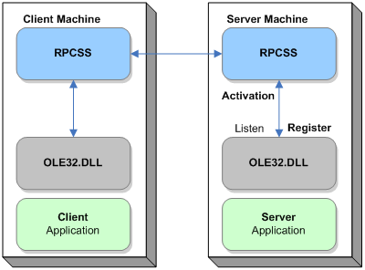
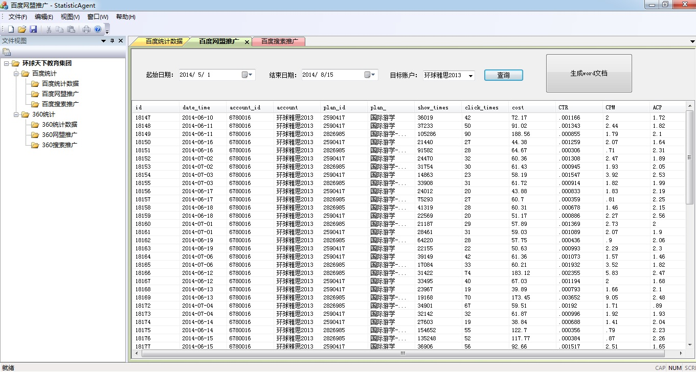
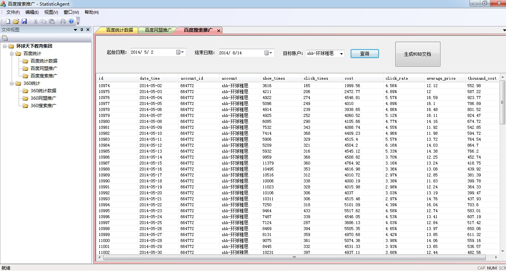

Server Application:
DcomPro.exe - Publish interfaces which will be invoked in client application. These interfaces are developed to read baidu statistics data from SQL Server database on server side.
DcomProPS.dll - The Proxy Stub dll is generated automatically when creating DCOM server application. If the server application and client application are deployed on different computers, this dll has to be registered first. Then client application can invoke the interfaces defined in server application directly.
Client Application:
StatisticAgent.exe - Develop user interface, algorithm, logical controls in client application. Call interfaces defined in ClientDll.dll to communicate with server application to get data from database on server side.
ClientDll.dll - Include some interfaces which encapsulate server application interfaces' calling. Interfaces in ClientDll.dll will be called in client application.
DcomProPS.dll - Proxy Stub dll which must be registered on both server side and client side prior to start communicating.
1. Baidu Network Alliance Promotion
- Search the data of a selected account within a specific period
- Write the data into a word document(Sample Report)
- Generate a line chart for these specific period of data

2. Baidu Search Promotion
- Search the data of a selected account within a specific period
- Write the data into a word document(Sample Report)
- Generate a line chart for these specific period of data
